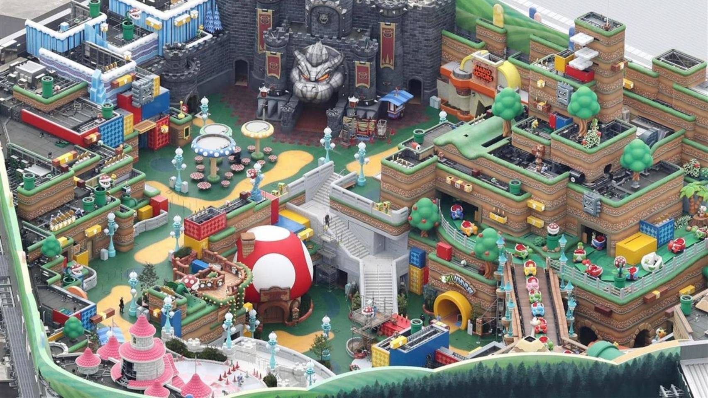
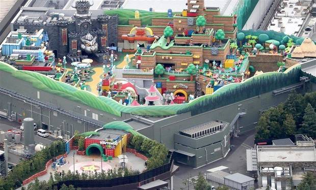

Novedades de la nueva PS5
 El cambio más destacado que encontramos entre la Play Station 4 y la Play Station 5 es su nueva unidad de almacenamiento sólido, SSD, que sustituye a los anteriores discos duros (HDD) consiguiendo una mayor rapidez y tiempos de carga menores. La resolución de la PS5 es otra de sus características más populares. La PS4 ya ofrece gráficos a 4K rescalados, pero en PS5 esa resolución será nativa, y la mayoría de juegos la aprovecharán, siempre y cuando tengas una televisión adecuada para ello.
Así, PS5 tienen retrocompatibilidad con la mayoría de juego y accesorios, como el visor de realidad virtual PSVR. No obstante, el mando DualShock 4 solo se podrá usar en los juegos de la PS4, pero no en los nuevos juegos de la PS5.
Otra de las partes que se transforman en Play Station 5 es el menú y el interfaz, ya que se han rediseñado y se añaden nuevas funciones como el menú de Actividades, que permite saltar directamente a diferentes niveles, modos o partidas multijugador sin tener que abrir el juego desde el principio.
La memoria interna de la consola es de 825 GB, menos que el TB de PS4 Pro. Otra de las mejoras claras de esta versión es que será mucho más silenciosa que su antecesora y no se calienta tanto.
El cambio más destacado que encontramos entre la Play Station 4 y la Play Station 5 es su nueva unidad de almacenamiento sólido, SSD, que sustituye a los anteriores discos duros (HDD) consiguiendo una mayor rapidez y tiempos de carga menores. La resolución de la PS5 es otra de sus características más populares. La PS4 ya ofrece gráficos a 4K rescalados, pero en PS5 esa resolución será nativa, y la mayoría de juegos la aprovecharán, siempre y cuando tengas una televisión adecuada para ello.
Así, PS5 tienen retrocompatibilidad con la mayoría de juego y accesorios, como el visor de realidad virtual PSVR. No obstante, el mando DualShock 4 solo se podrá usar en los juegos de la PS4, pero no en los nuevos juegos de la PS5.
Otra de las partes que se transforman en Play Station 5 es el menú y el interfaz, ya que se han rediseñado y se añaden nuevas funciones como el menú de Actividades, que permite saltar directamente a diferentes niveles, modos o partidas multijugador sin tener que abrir el juego desde el principio.
La memoria interna de la consola es de 825 GB, menos que el TB de PS4 Pro. Otra de las mejoras claras de esta versión es que será mucho más silenciosa que su antecesora y no se calienta tanto.¡Clic en la imagen! ☝
Xbox Series X: especificaciones técnicas
 El auténtico corazón de esta consola de videojuegos es el chip que aglutina tanto la CPU como la lógica gráfica, dos componentes que trabajan coordinadamente en el interior de un mismo circuito integrado. Aunque este SoC fabricado con fotolitografía ultravioleta extrema (EUV) de 7 nm implementa las microarquitecturas Zen 2 para la CPU y RDNA 2 para el procesador gráfico, no es idéntico a las soluciones de AMD que se apoyan en ellas. Microsoft ha confirmado que el cerebro de sus nuevas consolas incorpora a petición de sus ingenieros algunas modificaciones que en cierta medida lo desmarcan de los procesadores Ryzen 3000 y las nuevas Radeon RX 6000.
El auténtico corazón de esta consola de videojuegos es el chip que aglutina tanto la CPU como la lógica gráfica, dos componentes que trabajan coordinadamente en el interior de un mismo circuito integrado. Aunque este SoC fabricado con fotolitografía ultravioleta extrema (EUV) de 7 nm implementa las microarquitecturas Zen 2 para la CPU y RDNA 2 para el procesador gráfico, no es idéntico a las soluciones de AMD que se apoyan en ellas. Microsoft ha confirmado que el cerebro de sus nuevas consolas incorpora a petición de sus ingenieros algunas modificaciones que en cierta medida lo desmarcan de los procesadores Ryzen 3000 y las nuevas Radeon RX 6000.
¡Clic en la imagen! ☝
El Super Nintendo World de Japón casi ha finalizado su construcción

Super Nintendo World, el escenario con atracciones, decoraciones e incluso mecánicas de videojuego que forma parte del parque de atracciones Universal Studios de Japón, ya casi está terminado. Tres fotografías aéreas publicadas por el medio nipón The Sankei News (difundidas por @SoCal360 en Twitter) muestran que el resultado final es, en la mayoría de los casos, idénticos a los artes conceptuales con los que se anunció el parque, y en otros casos, incluso mejor.
Si decimos casi terminado es porque las fotografías solo muestran el exterior del parque y desconocemos el estado del interior de las instalaciones. En la siguiente fotografía podéis ver el punto de entrada a Super Nintendo World, a través del Castillo de Peach. La referencia al Super Mario 64 de Nintendo 64 se completa cuando se ve el estilo poligonal del Castillo de Bowser recreado al fondo del parque.
El entorno está repleto de Plantas Piraña, tuberías que llevan al interior de las construcciones, escaleras, pasarelas, puentes, detalles como la Casa de Toad, escenarios que representan niveles de los juegos de plataformas del fontanero como los helados y los de pradera, y por supuesto, muchos bloques de interrogación.
Un parque de atracciones con mecánicas de videojuego

Los asistentes al parque contarán con una pulsera que se sincronizará con su teléfono móvil. En su estancia en el Reino Champiñón tendrán que recoger monedas e interactuar con los elementos del escenario con su pulsera, de ahí, suponemos, la disposición de tantos "bloques ?" y monedas repartidas por todo el escenario. Además, también habrá atracciones como un circuito de Mario Kart.
La apertura de Super Nintendo World en Japón se iba a producir este año con motivo de los Juegos Olímpicos de Tokio 2020, pospuestos por la pandemia del COVID-19. El nuevo plan es abrir las puertas de esta sección de Universal Studios Japan (en Osaka) en marzo o abril, antes de que los JJOO se celebren del 23 de julio al 8 de agosto de 2021. Además, la construcción del Super Nintendo World de California, Estados Unidos, arrancó en agosto.
Ir arriba